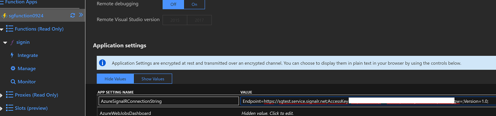

在学习ASRS的过程中几次会遇到一个问题。创建了ASRS的instance之后拿到了connectionstring, 但是却不知道如何放置到自己的应用中。微软的github上的sample使用的是命令行直接进行配置，如果想自己在代码中指定，或者在配置文件中配置connectionstring，却不得其法。其实sample中零零散散的分别提到过如何进行设置，只是找起来特别麻烦，散落在各个文章中。这里统一汇总一下。
如何找到ASRS的ConnectionString
- 首先要有一个自己的ASRS instance, 如何创建可以参考这里的步骤，已经很详细了。 Provision a SignalR Service
- 登录到Azure Portal，找到创建好的ASRS instance。点击 Keys.
- 在这里能看到两个Keys, Primary 和Secondary. 使用Primary 或 Secondary都可以，这两Key在效果上是一致的，没有什么区别。唯一的区别就是名字不一样。
配置的方式设定ConnectionString
比较推荐的方式是将ConnectionString配置在config文件中。Key 一般是不会改变的，不过处于自己的需要可以在portal进行key的Regenerate. 在regenerate key之后，修改配置文件中对应的键值对即可，不需要重新编译。
目前ASRS支持两个版本的App Service, ASP.NET Core SignalR 和 ASP.NET SignalR， 前者已经General Available (GA), 后者在Preview阶段。在使用不同版本的.NET时候，配置的地方也不一样。
ASP.Net Core SignalR的ConnectionString可以配置在appsettings.json.
1 | { |
ASP.Net SignalR的ConnectionString是配置在web.config中。
1 | <configuration> |
编程的方式指定ConnectionString
另外一种方式是在Code里面直接指定ConnectionString. 这种方式适用于当配置文件不知道在什么地方的情况下使用。我遇到一个例子是运行在Azure Fabric Service上的App Service，一开始是找不到配置文件的配置方式，快速的workaround就是在代码里面直接hardcode.
App Server Sample
1 | public class Startup |
或者也可以这么写
1 | services.AddSignalR() |
可以参考这里的链接 Configure Connection String
Serverless的方式可以参考这里
1 | app.Command("server", cmd => |
在web APP中配置
在Web App中的配置与在configuration中配置的方式很类似，关键是在Web App中找到配置项。
- 登录到Azure Portal, 并且找到相应的Web App。
- 点击 Application settings. 修改App Setting Name 中的键 “Azure__SignalR__ConnectionString” 所对应的值。
在Function App中配置。
在Function App中的配置与在Web App中配置的方式很类似.
- 登录到Azure Portal, 并且找到相应的Fuction App。
- 点击 Application settings.
- 修改App Setting Name 中的键 “Azure__SignalR__ConnectionString” 所对应的值。
